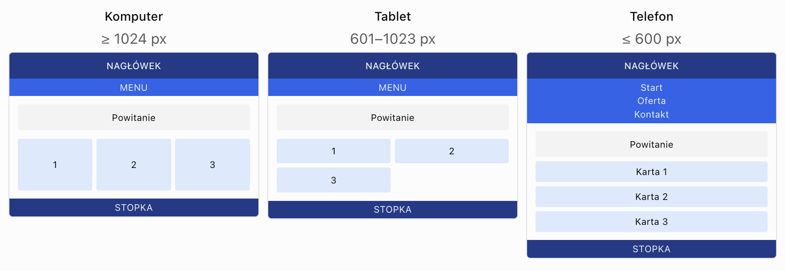

Tworzenie responsywnego układu witryny dla różnych rozdzielczości ekranów
Cel lekcji: samodzielne zaprojektowanie i wykonanie witryny internetowej, której układ dostosowuje się do różnych szerokości ekranów, z wykorzystaniem HTML5, Flexbox, elastycznych jednostek oraz media queries.
Czas realizacji: 2 × 45 minut.
1. Wprowadzenie
W poprzedniej lekcji poznaliśmy podstawowe techniki responsywnego projektowania: viewport, jednostki elastyczne oraz media queries.
Teraz wykorzystamy tę wiedzę do przygotowania kompletnego układu strony internetowej.
Naszym zadaniem będzie zaprojektowanie witryny, która zachowuje tę samą treść, ale zmienia sposób rozmieszczenia elementów w zależności od dostępnej szerokości.
Przykładowe zmiany układu
- Na komputerze karty są rozmieszczone w trzech kolumnach.
- Na tablecie karty są rozmieszczone w dwóch kolumnach.
- Na telefonie karty są ustawione jedna pod drugą.
- Menu na dużym ekranie jest poziome, a na małym pionowe.
- Obrazy zmniejszają się wraz z dostępną przestrzenią.
- Tekst i odstępy pozostają czytelne na różnych ekranach.
📌 Zapamiętaj
Responsywny układ nie wymaga tworzenia osobnej strony HTML dla telefonu, tabletu i komputera.
Wystarczy jeden dokument HTML oraz odpowiednio przygotowany arkusz CSS.
2. Planowanie responsywnego układu
Przed rozpoczęciem kodowania warto przygotować schemat wyglądu strony dla różnych szerokości ekranu.
Układ komputerowy
+---------------------------------------------+
| NAGŁÓWEK |
+---------------------------------------------+
| START | OFERTA | KONTAKT |
+---------------------------------------------+
| |
| SEKCJA POWITALNA |
| |
+--------------+--------------+---------------+
| KARTA 1 | KARTA 2 | KARTA 3 |
+--------------+--------------+---------------+
| |
| STOPKA |
+---------------------------------------------+Układ tabletowy
+-----------------------------------+
| NAGŁÓWEK |
+-----------------------------------+
| START | OFERTA | KONTAKT |
+-----------------------------------+
| SEKCJA POWITALNA |
+----------------+------------------+
| KARTA 1 | KARTA 2 |
+----------------+------------------+
| KARTA 3 | |
+----------------+------------------+
| STOPKA |
+-----------------------------------+Układ mobilny
+----------------------+
| NAGŁÓWEK |
+----------------------+
| START |
| OFERTA |
| KONTAKT |
+----------------------+
| SEKCJA POWITALNA |
+----------------------+
| KARTA 1 |
+----------------------+
| KARTA 2 |
+----------------------+
| KARTA 3 |
+----------------------+
| STOPKA |
+----------------------+Zauważ, że w każdym wariancie występują te same elementy. Zmienia się jedynie ich rozmieszczenie.
3. Szerokość viewport a rozdzielczość ekranu
W języku potocznym często mówimy o dostosowywaniu strony do rozdzielczości ekranu.
W CSS media queries dotyczą jednak zwykle szerokości viewport wyrażonej w pikselach CSS, a nie fizycznej liczby pikseli wyświetlacza.
Na przykład przeglądarka uruchomiona na komputerze może zajmować tylko część ekranu. Wtedy dostępny viewport jest węższy niż cały monitor.
Przykładowe zakresy dla naszej witryny
| Szerokość viewport | Układ kart | Menu |
|---|---|---|
| Do 600 px | 1 kolumna | Pionowe |
| 601–1023 px | 2 kolumny | Poziome |
| Od 1024 px | 3 kolumny | Poziome |
Są to wartości wybrane na potrzeby ćwiczenia, a nie obowiązujące granice dla wszystkich urządzeń.
📌 Zapamiętaj
Breakpoint powinien wynikać z potrzeb układu strony. Najważniejsze jest to, czy zawartość nadal mieści się i pozostaje czytelna.
4. Organizacja plików projektu
Utworzymy jedną witrynę z zewnętrznym arkuszem CSS.
Struktura folderów
responsywna-witryna/
|
|-- index.html
|
|-- style.css
|
|-- img/
|
|-- html.jpg
|-- css.jpg
|-- javascript.jpg
Plik index.html
zawiera strukturę i treść strony.
Plik style.css
odpowiada za wygląd
i zmianę układu
przy różnych szerokościach.
Folder img
przechowuje obrazy.
Podłączenie CSS
<link rel="stylesheet" href="style.css">Ustawienie viewport
<meta name="viewport"
content="width=device-width, initial-scale=1.0">5. Budowa struktury HTML
Najpierw przygotowujemy strukturę dokumentu HTML.
Nie tworzymy osobnych
znaczników body
ani osobnych dokumentów HTML
dla każdego rozmiaru ekranu.
Przykład
<!DOCTYPE html>
<html lang="pl">
<head>
<meta charset="UTF-8">
<meta name="viewport"
content="width=device-width, initial-scale=1.0">
<title>Moja witryna</title>
<link rel="stylesheet" href="style.css">
</head>
<body>
<header>
<h1>Moja witryna</h1>
</header>
<nav class="menu">
<a href="#start">Start</a>
<a href="#oferta">Oferta</a>
<a href="#kontakt">Kontakt</a>
</nav>
<main>
<section id="start">
<h2>Witaj!</h2>
</section>
<section id="oferta">
<h2>Nasza oferta</h2>
</section>
<section id="kontakt">
<h2>Kontakt</h2>
</section>
</main>
<footer>
<p>Autor strony</p>
</footer>
</body>
</html>📌 Dobra praktyka
Strukturę HTML przygotuj przed rozpoczęciem formatowania CSS. Ułatwi to sprawdzenie, czy wszystkie wymagane elementy znajdują się na stronie.
6. Elastyczny kontener strony
Główny kontener powinien dostosowywać szerokość do dostępnego miejsca, ale nie rozciągać się nadmiernie na dużym monitorze.
HTML
<main class="kontener">
<h2>Zawartość strony</h2>
</main>CSS
* {
box-sizing: border-box;
}
.kontener {
width: 90%;
max-width: 1200px;
margin: 0 auto;
}Wyjaśnienie
| Właściwość | Znaczenie |
|---|---|
width: 90% |
Kontener zajmuje 90% dostępnej szerokości. |
max-width: 1200px |
Kontener nie przekroczy 1200 px. |
margin: 0 auto |
Wyśrodkowuje kontener w poziomie. |
box-sizing: border-box |
Uwzględnia padding i border w zadeklarowanej szerokości. |
Dlaczego nie zawsze width: 1200px?
.kontener {
width: 1200px;
}Taki element może nie zmieścić się na małym ekranie.
Elastyczna szerokość
połączona z max-width
pozwala tego uniknąć.
7. Układ dla komputerów – trzy kolumny
Na szerokim ekranie chcemy wyświetlać trzy karty obok siebie.
HTML
<div class="karty">
<article class="karta">
<h3>HTML</h3>
<p>Struktura strony.</p>
</article>
<article class="karta">
<h3>CSS</h3>
<p>Wygląd strony.</p>
</article>
<article class="karta">
<h3>JavaScript</h3>
<p>Interaktywność strony.</p>
</article>
</div>CSS
.karty {
display: flex;
gap: 20px;
}
.karta {
flex: 1;
min-width: 0;
padding: 20px;
background-color: white;
border: 1px solid #CBD5E1;
border-radius: 10px;
}
display: flex
ustawia karty w wierszu.
flex: 1
pozwala kartom
dzielić dostępną przestrzeń.
gap: 20px
dodaje odstępy między kartami.
📌 Zapamiętaj
Trzy kolumny są wygodne tylko wtedy, gdy każda karta ma wystarczająco dużo miejsca na swoją zawartość.
8. Układ dla tabletów – dwie kolumny
Przy mniejszej szerokości trzy karty mogą stać się zbyt wąskie.
Zmienimy układ na dwie kolumny.
CSS
@media (min-width: 601px) and (max-width: 1023px) {
.karty {
flex-wrap: wrap;
}
.karta {
flex: 0 0 calc((100% - 20px) / 2);
}
}Wyjaśnienie
flex-wrap: wrap
pozwala przenosić
karty do kolejnego wiersza.
Szerokość pojedynczej karty obliczamy jako połowę dostępnej przestrzeni po odjęciu odstępu między kolumnami.
calc((100% - 20px) / 2)W pierwszym wierszu znajdą się dwie karty, a trzecia przejdzie do kolejnego wiersza.
📌 Uwaga
W tym przykładzie
zakładamy odstęp
gap: 20px
oraz zastosowanie
box-sizing: border-box.
9. Układ dla telefonów – jedna kolumna
Na wąskim ekranie najlepszym rozwiązaniem będzie ustawienie kart jedna pod drugą.
CSS
@media (max-width: 600px) {
.karty {
flex-direction: column;
}
.karta {
width: 100%;
}
}Efekt
+------------------+
| HTML |
+------------------+
+------------------+
| CSS |
+------------------+
+------------------+
| JavaScript |
+------------------+Każda karta zajmuje dostępne miejsce w swoim wierszu.
Dlaczego flex-direction?
flex-direction: column
zmienia kierunek osi głównej
kontenera Flexbox.
Dzięki temu elementy są ustawiane pionowo.
11. Elastyczne karty i odstępy
Przy projektowaniu układu wielokolumnowego należy pamiętać o szerokościach kart i odstępach między nimi.
Przykład
.karty {
display: flex;
gap: 20px;
}
.karta {
flex: 1;
padding: 20px;
}
Właściwość
gap
tworzy odstęp
między elementami.
Problem z procentami
.karta {
width: 33.33%;
}Trzy elementy o szerokości 33,33% zajmują prawie 100% dostępnej przestrzeni.
Dodanie gap
może spowodować,
że elementy nie zmieszczą się
w jednym wierszu.
Rozwiązanie z calc()
.karta {
width: calc((100% - 40px) / 3);
}W tym przykładzie odejmujemy łącznie 40 px na dwa odstępy po 20 px.
Następnie pozostałą szerokość dzielimy na trzy karty.
📌 Dobra praktyka
W prostych układach
Flexbox często wygodniej
zastosować flex: 1
zamiast ręcznie
obliczać szerokość kart.
12. Responsywne obrazy i proporcje
Obrazy powinny dostosowywać się do szerokości kart i innych kontenerów.
HTML
<img src="img/html.jpg"
alt="Przykład kodu HTML">CSS
img {
max-width: 100%;
height: auto;
}Dzięki temu obraz nie będzie szerszy niż jego kontener.
Jednakowa wysokość obrazów w kartach
.karta img {
width: 100%;
height: 180px;
object-fit: cover;
}
object-fit: cover
pozwala wypełnić
obszar obrazu,
zachowując proporcje,
ale może przyciąć
jego fragmenty.
Wariant z aspect-ratio
.karta img {
width: 100%;
aspect-ratio: 16 / 9;
object-fit: cover;
}
Właściwość
aspect-ratio
określa proporcje
obszaru obrazu.
📌 Zapamiętaj
Do zwykłych zdjęć
często wystarcza
max-width: 100%
i height: auto.
Jeśli zdjęcia mają
tworzyć jednakowe karty,
można dodatkowo zastosować
aspect-ratio
i object-fit.
13. Responsywny tekst i odstępy
W responsywnym układzie należy dostosować nie tylko kolumny, ale również tekst i odstępy.
Elastyczny nagłówek
h1 {
font-size: clamp(26px, 4vw, 48px);
}Rozmiar nagłówka będzie dostosowywany do szerokości viewport, ale nie przekroczy określonych granic.
Odstępy w jednostkach rem
section {
padding: 2rem;
}
Przy domyślnym rozmiarze
czcionki elementu html
wynoszącym 16 px,
2rem
odpowiada 32 px.
Zmniejszenie odstępów na telefonie
@media (max-width: 600px) {
section {
padding: 1rem;
}
}Na małym ekranie sekcje będą miały mniejsze odstępy wewnętrzne.
Czytelność tekstu
p {
font-size: 1rem;
line-height: 1.6;
}Odpowiednia wysokość linii poprawia czytelność dłuższych akapitów.
14. Responsywne tabele i formularze
Tabele i formularze mogą zajmować dużo miejsca, dlatego wymagają szczególnej uwagi na małych ekranach.
Responsywna tabela
Szeroka tabela może nie mieścić się w viewport.
Jednym z rozwiązań jest umieszczenie jej w kontenerze z poziomym przewijaniem.
HTML
<div class="tabela-kontener">
<table>
<tr>
<th>Produkt</th>
<th>Cena</th>
<th>Dostępność</th>
</tr>
<tr>
<td>Laptop</td>
<td>3000 zł</td>
<td>Dostępny</td>
</tr>
</table>
</div>CSS
.tabela-kontener {
overflow-x: auto;
}
table {
width: 100%;
border-collapse: collapse;
}
th,
td {
padding: 10px;
border: 1px solid #64748B;
}Jeżeli tabela okaże się szersza od kontenera, można ją przewijać w jego obrębie.
Responsywny formularz
form {
display: flex;
flex-direction: column;
gap: 12px;
}
input,
select,
textarea,
button {
width: 100%;
padding: 10px;
box-sizing: border-box;
}Pola formularza zajmują dostępną szerokość swojego kontenera.
📌 Zapamiętaj
Responsywność nie oznacza, że każdy element musi zostać zmniejszony. Czasami lepszym rozwiązaniem jest zmiana układu lub przewijanie tylko wybranego elementu.
15. Testowanie układu dla różnych szerokości
Po przygotowaniu strony należy sprawdzić, czy wszystkie elementy poprawnie dostosowują się do szerokości viewport.
Testowanie w Chrome lub Edge
- Otwórz plik
index.htmlw przeglądarce. - Naciśnij F12.
- Włącz tryb urządzenia mobilnego.
- Ustaw szerokość viewport na 360 px.
- Sprawdź układ strony.
- Ustaw szerokość na 768 px.
- Sprawdź układ kart i menu.
- Ustaw szerokość na 1440 px.
- Sprawdź, czy karty tworzą trzy kolumny.
Oczekiwane wyniki
| Szerokość | Oczekiwany układ |
|---|---|
| 360 px | Jedna kolumna kart, pionowe menu. |
| 768 px | Dwie kolumny kart, poziome menu. |
| 1440 px | Trzy kolumny kart, poziome menu. |
Dodatkowe sprawdzenie
- Czy wszystkie obrazy są widoczne?
- Czy tekst mieści się w kartach?
- Czy menu jest czytelne?
- Czy odnośniki działają?
- Czy nie występuje niepotrzebne przewijanie poziome całej strony?
- Czy odstępy są odpowiednie?
- Czy układ wygląda poprawnie także pomiędzy wybranymi szerokościami?
16. Najczęstsze błędy
Błąd 1 – sztywna szerokość kontenera
.kontener {
width: 1200px;
}Na telefonie kontener może wychodzić poza ekran.
Poprawnie:
.kontener {
width: 90%;
max-width: 1200px;
}Błąd 2 – brak meta viewport
Strona może być nieprawidłowo skalowana przez przeglądarkę mobilną.
<meta name="viewport"
content="width=device-width, initial-scale=1.0">Błąd 3 – trzy kolumny na telefonie
Jeśli karty są zbyt wąskie, należy zmienić ich układ.
@media (max-width: 600px) {
.karty {
flex-direction: column;
}
}Błąd 4 – brak odstępów
Karty bez odstępów mogą wyglądać jak jeden połączony blok.
.karty {
gap: 20px;
}Błąd 5 – zbyt duże obrazy
img {
width: 1000px;
}Lepsze rozwiązanie:
img {
max-width: 100%;
height: auto;
}Błąd 6 – niewłaściwy breakpoint
Jeśli zmiana układu następuje zbyt późno, elementy mogą nakładać się na siebie.
Należy przetestować stronę i dobrać odpowiednią szerokość graniczną.
Błąd 7 – testowanie tylko jednej szerokości
Strona może działać przy 360 px i 1440 px, ale wyglądać źle przy 850 px.
Dlatego trzeba sprawdzać również szerokości pośrednie.
17. Kompletny przykład – responsywna witryna „Akademia WWW”
Przygotujemy stronę prezentującą trzy kursy: HTML, CSS i JavaScript.
Strona będzie posiadała:
- nagłówek,
- menu nawigacyjne,
- sekcję powitalną,
- trzy karty kursów,
- sekcję kontaktową,
- stopkę.
Karty będą wyświetlane w jednej, dwóch lub trzech kolumnach, zależnie od szerokości viewport.
Plik index.html
<!DOCTYPE html>
<html lang="pl">
<head>
<meta charset="UTF-8">
<meta name="viewport"
content="width=device-width, initial-scale=1.0">
<title>Akademia WWW</title>
<link rel="stylesheet" href="style.css">
</head>
<body>
<header id="start">
<h1>AKADEMIA WWW</h1>
<p>
Naucz się tworzyć strony internetowe
</p>
</header>
<nav class="menu">
<a href="#start">Start</a>
<a href="#kursy">Kursy</a>
<a href="#kontakt">Kontakt</a>
</nav>
<main class="kontener">
<section class="powitanie">
<h2>Witaj w Akademii WWW!</h2>
<p>
Poznaj technologie wykorzystywane
podczas tworzenia nowoczesnych
stron internetowych.
</p>
</section>
<section id="kursy">
<h2>Nasze kursy</h2>
<div class="karty">
<article class="karta">
<h3>HTML5</h3>
<p>
Poznaj podstawowe znaczniki
i strukturę dokumentu HTML.
</p>
<a href="#kontakt">
Więcej informacji
</a>
</article>
<article class="karta">
<h3>CSS3</h3>
<p>
Naucz się formatować tekst,
kolory i układy stron.
</p>
<a href="#kontakt">
Więcej informacji
</a>
</article>
<article class="karta">
<h3>JavaScript</h3>
<p>
Dodaj do swojej strony
interaktywne elementy.
</p>
<a href="#kontakt">
Więcej informacji
</a>
</article>
</div>
</section>
<section class="kontakt" id="kontakt">
<h2>Kontakt</h2>
<p>
Napisz do nas:
<a href="mailto:kontakt@example.com">
kontakt@example.com
</a>
</p>
</section>
</main>
<footer>
<p>
Akademia WWW – 2026
</p>
</footer>
</body>
</html>Plik style.css
/* Ustawienia ogólne */
*,
*::before,
*::after {
box-sizing: border-box;
}
body {
margin: 0;
font-family: Arial, sans-serif;
line-height: 1.6;
background-color: #F1F5F9;
color: #1F2937;
}
/* Kontener */
.kontener {
width: 90%;
max-width: 1200px;
margin: 0 auto;
}
/* Nagłówek */
header {
padding: 50px 20px;
background-color: #1E3A8A;
color: white;
text-align: center;
}
header h1 {
margin: 0;
font-size: clamp(26px, 4vw, 48px);
}
/* Menu */
.menu {
display: flex;
justify-content: center;
gap: 20px;
padding: 15px;
background-color: #2563EB;
}
.menu a {
padding: 10px 15px;
color: white;
text-decoration: none;
border-radius: 6px;
}
.menu a:hover {
background-color: #1D4ED8;
}
.menu a:focus-visible {
outline: 3px solid #F59E0B;
outline-offset: 3px;
}
/* Sekcje */
section {
margin: 30px 0;
}
section h2 {
color: #1E3A8A;
}
/* Powitanie */
.powitanie {
padding: 30px;
background-color: white;
border-radius: 10px;
}
/* Karty – układ komputerowy */
.karty {
display: flex;
gap: 20px;
}
.karta {
display: flex;
flex-direction: column;
flex: 1;
min-width: 0;
padding: 25px;
background-color: white;
border: 1px solid #CBD5E1;
border-radius: 10px;
box-shadow:
0 4px 10px rgba(0, 0, 0, 0.08);
}
.karta h3 {
margin-top: 0;
color: #2563EB;
}
.karta a {
display: inline-block;
margin-top: auto;
padding: 10px;
text-align: center;
background-color: #2563EB;
color: white;
text-decoration: none;
border-radius: 6px;
}
.karta a:hover {
background-color: #1D4ED8;
}
.karta a:focus-visible {
outline: 3px solid #F59E0B;
outline-offset: 3px;
}
/* Kontakt */
.kontakt {
padding: 30px;
background-color: #DBEAFE;
border-radius: 10px;
}
/* Stopka */
footer {
padding: 20px;
background-color: #1E3A8A;
color: white;
text-align: center;
}
/* Układ tabletowy */
@media (min-width: 601px) and (max-width: 1023px) {
.karty {
flex-wrap: wrap;
}
.karta {
flex: 0 0 calc((100% - 20px) / 2);
}
.kontener {
width: 92%;
}
}
/* Układ mobilny */
@media (max-width: 600px) {
.menu {
flex-direction: column;
align-items: stretch;
gap: 5px;
}
.menu a {
text-align: center;
}
.karty {
flex-direction: column;
}
.karta {
width: 100%;
}
.powitanie,
.kontakt {
padding: 20px;
}
header {
padding: 30px 15px;
}
}Oczekiwany efekt
| Viewport | Karty | Menu |
|---|---|---|
| 360 px | 1 kolumna | Pionowe |
| 768 px | 2 kolumny | Poziome |
| 1440 px | 3 kolumny | Poziome |
📌 Ważne
Wszystkie trzy wersje korzystają z tego samego pliku HTML.
Różnice w wyglądzie wynikają z reguł CSS, w szczególności z media queries.
📌 Zapamiętaj
- Responsywny układ dostosowuje się do dostępnej szerokości viewport.
- Nie trzeba tworzyć osobnych dokumentów HTML dla różnych urządzeń.
- Przed kodowaniem warto zaplanować wygląd strony dla kilku szerokości.
- Viewport nie musi mieć takiej samej szerokości jak cały ekran urządzenia.
- Breakpoint to punkt zmiany układu.
- Breakpoints dobieramy do potrzeb zawartości strony.
- Elastyczny kontener może mieć szerokość procentową i max-width.
margin: 0 autopozwala wyśrodkować kontener blokowy o ograniczonej szerokości.display: flextworzy kontener elastyczny.flex-direction: rowustawia elementy w wierszu.flex-direction: columnustawia elementy w kolumnie.flex-wrap: wrapumożliwia zawijanie elementów.gapokreśla odstępy między elementami.flex: 1pozwala elementom dzielić dostępną przestrzeń.calc()pozwala obliczać szerokości z uwzględnieniem odstępów.@mediaumożliwia zmianę stylów w zależności od warunków.- Na szerokim ekranie można zastosować trzy kolumny.
- Na średnim ekranie można zastosować dwie kolumny.
- Na małym ekranie można zastosować jedną kolumnę.
- Menu może zmieniać kierunek z poziomego na pionowy.
- Obrazy powinny dostosowywać się do szerokości kontenera.
object-fit: coverpozwala wypełnić obszar obrazu z możliwym przycięciem.clamp()umożliwia elastyczne określanie rozmiaru tekstu.- Responsywność należy testować na wielu szerokościach.
- Gotowa strona powinna być czytelna i wygodna w obsłudze.
📝 Zadania praktyczne
Temat projektu: Responsywna witryna „Moje pasje i zainteresowania”.
Cel: przygotowanie jednej strony, która wyświetla zawartość w trzech, dwóch lub jednej kolumnie zależnie od szerokości viewport.
Wszystkie zadania wykonaj w jednym projekcie. Nie twórz osobnych plików HTML dla telefonu, tabletu i komputera.
Zadanie 1 – Przygotowanie struktury strony
- Utwórz folder
PSI_34. - W folderze utwórz plik
index.html. - Utwórz plik
style.css. - Dodaj poprawną strukturę HTML5.
- Ustaw język dokumentu na polski.
- Dodaj kodowanie UTF-8.
- Dodaj meta viewport.
- Podłącz zewnętrzny arkusz CSS.
- Dodaj nagłówek strony z własnym tytułem.
- Dodaj menu z trzema odnośnikami.
- Dodaj sekcję powitalną.
- Dodaj sekcję z trzema kartami opisującymi zainteresowania.
- Dodaj sekcję kontaktową.
- Dodaj stopkę z imieniem i nazwiskiem.
Zadanie 2 – Formatowanie ogólne i kontener
- Ustaw dla
bodymargines 0. - Ustaw czcionkę Arial.
- Ustaw tło strony na
#F1F5F9. - Dodaj
box-sizing: border-boxdla wszystkich elementów. - Utwórz klasę
kontener. - Ustaw szerokość kontenera na 90%.
- Ustaw
max-width: 1200px. - Wyśrodkuj kontener za pomocą
margin: 0 auto. - Ustaw nagłówek i stopkę w wybranych kolorach.
- Dodaj odpowiednie odstępy wewnętrzne.
Zadanie 3 – Układ komputerowy
Przygotuj układ dla szerokości co najmniej 1024 px.
- Ustaw menu poziomo za pomocą Flexbox.
- Dodaj odstępy między odnośnikami.
- Ustaw kontener kart jako Flexbox.
- Rozmieść trzy karty obok siebie.
- Ustaw dla kart
flex: 1. - Dodaj padding 25 px.
- Dodaj obramowanie i zaokrąglenie narożników.
- Sprawdź wygląd strony przy szerokości 1440 px.
Zadanie 4 – Układ tabletowy
Przygotuj układ dla szerokości od 601 px do 1023 px.
- Dodaj odpowiednią regułę
@media. - Włącz
flex-wrap: wrapdla kontenera kart. - Ustaw szerokości kart tak, aby w pierwszym wierszu mieściły się dwie.
- Uwzględnij odstęp między kartami.
- Trzecia karta powinna przejść do kolejnego wiersza.
- Ustaw szerokość głównego kontenera na 92%.
- Sprawdź wygląd strony przy szerokości 768 px.
Zadanie 5 – Układ mobilny
Przygotuj układ dla szerokości maksymalnie 600 px.
- Dodaj regułę
@media (max-width: 600px). - Zmień menu na pionowe.
- Wyśrodkuj tekst odnośników.
- Ustaw karty jedna pod drugą.
- Ustaw szerokość kart na 100%.
- Zmniejsz padding sekcji powitalnej.
- Zmniejsz odstępy w nagłówku.
- Sprawdź wygląd strony przy szerokości 360 px.
- Upewnij się, że nie występuje poziome przewijanie całej strony.
Zadanie 6 – Obrazy i testowanie
- Utwórz folder
img. - Dodaj do projektu trzy obrazy przedstawiające Twoje zainteresowania.
- Umieść po jednym obrazie w każdej karcie.
- Dodaj odpowiednie atrybuty
alt. - Ustaw szerokość obrazów na 100%.
- Zastosuj
aspect-ratio: 16 / 9. - Zastosuj
object-fit: cover. - Ustaw rozmiar głównego nagłówka za pomocą
clamp(). - Przetestuj stronę przy 360 px, 768 px, 1024 px i 1440 px.
- Popraw wszystkie zauważone błędy.
Schemat działania responsywnej strony. Jedna strona HTML, trzy układy CSS dostosowane do szerokości viewport.

📁 Wymagana struktura projektu
PSI_34/
|
|-- index.html
|
|-- style.css
|
|-- img/
|
|-- pasja1.jpg
|-- pasja2.jpg
|-- pasja3.jpgMożesz zastosować inne nazwy obrazów, jeśli ścieżki w HTML będą poprawne.
📤 Oddanie pracy
Spakuj cały folder
PSI_34
do archiwum ZIP
i prześlij na odpowiednie
Zadanie w Teams.
Przed oddaniem sprawdź, czy strona poprawnie działa przy szerokościach: 360 px, 768 px i 1440 px.
Wszystkie teksty, tytuły i opisy powinny być własne.